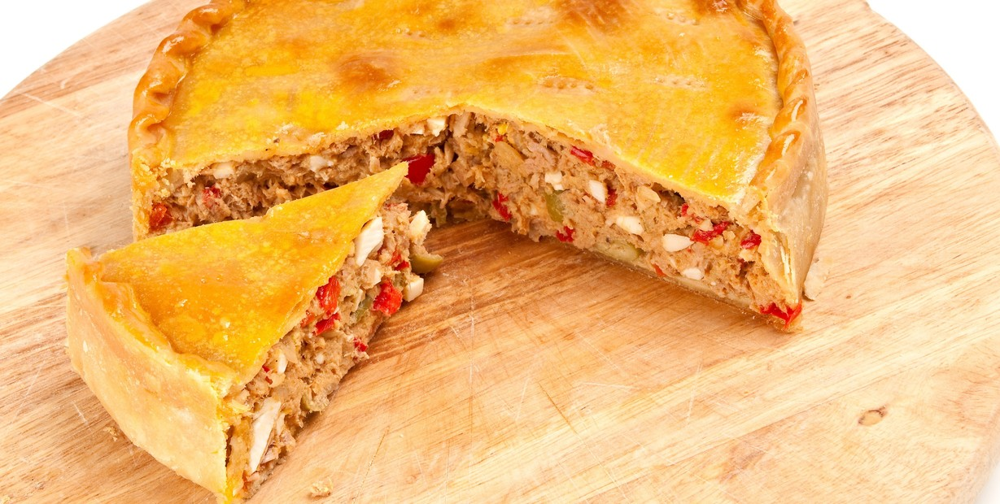

Home
Tarta de Atun

One of my favourites dishes. MY brother Pablo make it this dish really often.
Ingredients
- tuna
- Boiled Eggs
- some veggies
- Mass for the tarta
Steps
- Put the eggs to boil
- Cut the veggies and fry them together.
- Add the tuna. WHen the filler is ready, put to get some cold
- GEt the mass ready, and put all the filler inside.
- Take it to the oven.
- Eat the tarta.